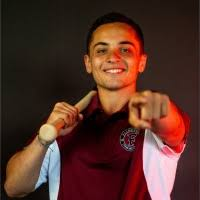

Student, Philip Merrill College of Journalism at the University of Maryland
With the Boston Globe, I am a Published and printed writer tasked with contributing stand-alone feature stories and lead-ins for multiple game recaps. I cover various high school sporting events when in and around MetroWest Boston Area
For Big Ten Plus, I am a paid broadcaster and production member, part of team that produces collegiate broadcasts for Big Ten subscriber networks. My play-by-play duties include detailed preparation for eight Division 1 sports, including every gymnastics meet and wrestling match broadcasted on Maryland’s Big Ten Plus in 2023-24
With WMUC Sports, I am an In-person broadcaster covering Maryland athletics in College Park and at road locations through live Mixlr broadcasts. I self-produce broadcasts and edit game highlights day-of through Adobe Creative Cloud technologies.